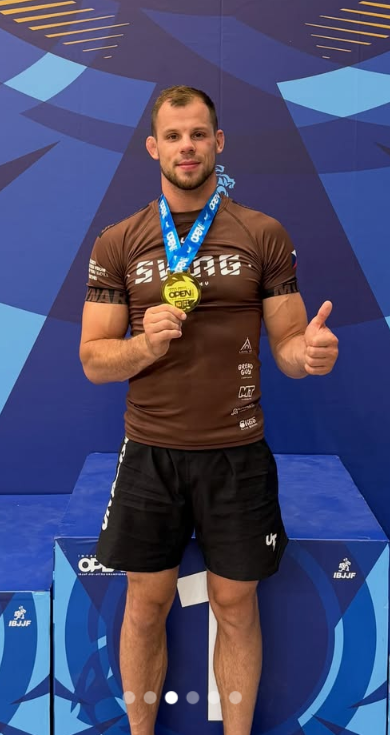
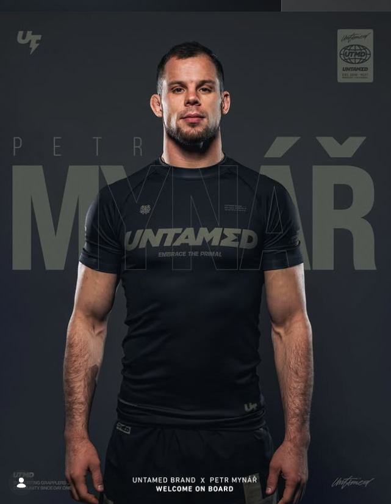

Jmenuji se Petr Mynář a brazilskému jiu-jitsu se věnuji již řadu let. Předtím jsem strávil 13 let v judu, které mi vybudovalo pevné technické základy, disciplínu a soutěžní zkušenosti.
Dnes své zkušenosti předávám dál prostřednictvím individuálních i skupinových tréninků. Mým cílem není jen učit techniky, ale pomáhat lidem rozvíjet sebevědomí, disciplínu a radost z jiu-jitsu – ať už jsou úplní začátečníci, nebo závodníci, kteří chtějí posunout svůj výkon na vyšší úroveň.
Kromě jiu-jitsu působím také jako učitel biologie a tělesné výchovy na gymnáziu v Brně. Práce s lidmi mě baví nejen na žíněnce, ale i ve škole. Možnost předávat zkušenosti, motivovat ostatní a sledovat jejich pokroky je něco, co mě naplňuje jak při výuce, tak při trénincích.


Nyní si můžete rezervovat konzultace, kde si probereme Vaše cíle, jak Vám s nimi můžu konkrétně pomoct a více